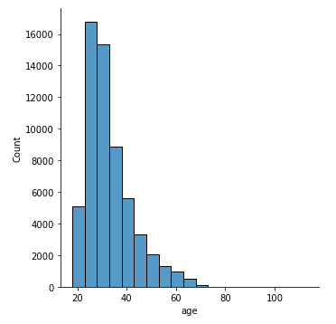

Project 2 Medical Insurance Costs: Case study to discover relationships between the amounts charged for life insurance with some customer indexes
2.1 Introdution
This project we will analyses data from US Medical Insurance Costs. Recently many people are looking for this type of insurance and prices can vary widely according to the user’s data. The main question of this analysis is to answer the final price that users need to pay.
Data sources:
insurance.csv was provided by Kaggle.com: Medical Cost Personal Datasets
2.1.1 Project Goals
In this project will be make a case study using the linear regression method on Medical Insurance Costs dataset provided by the kaggle
2.1.2 Data
The project has one data set provided by Kaggle called insurance.csv. In the data, each row represents an user and the columns are the responses to their user profiles which include data about them.
2.1.3 Analysis
This solution will use descriptive statistics and data visualization to find key figures in understanding the distribution, count, and relationship between variables.
2.1.4 Evaluation
The project will conclude with the evaluation of linear model. A simple case study will be done for one variable and then for multiple variables. After that will be focus on visualizing the adjusted models than will be look at the residual plots and the error band.
Testando como escrever bem
